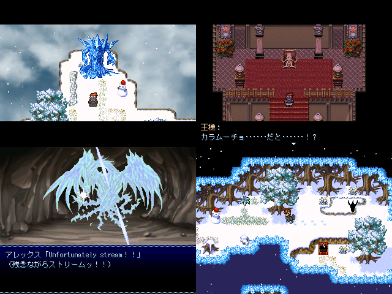

 |
| ◇DL(1.77MB)◇ ◇感想◇ |
| 術者名◇ ラクスマン |
| 魔具◇ 2000 |
| コメント◇ ＧＷに出すのはちょっとと思っていた作品。 突発祭りがあると聞いたら出さざるを得ない。 ------ あるところに精霊が守る山がありました。 そして吹雪が吹く夜、その山で一人の魔法が生まれます。 ちょうどその日から吹雪が止まなくなり、 王様はアレックスに調査と原因の排除をお願いするのですが・・・・・・ ------ |
| マスターから◇ カラムーチョから火の元素を得るには少々足りない 寒さを凌ぐにはハバネロぐらいが丁度良い(当社比) |